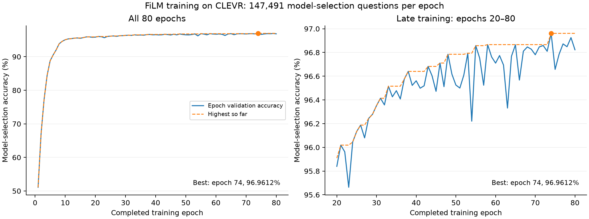
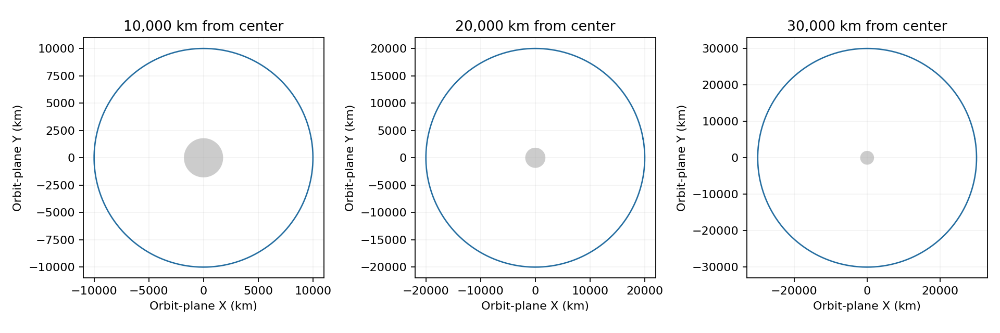
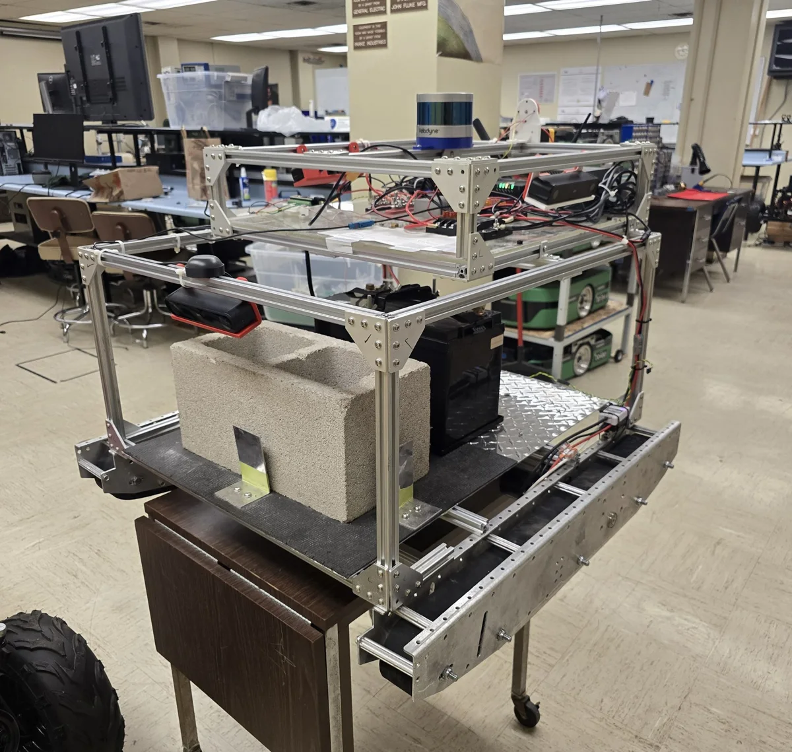
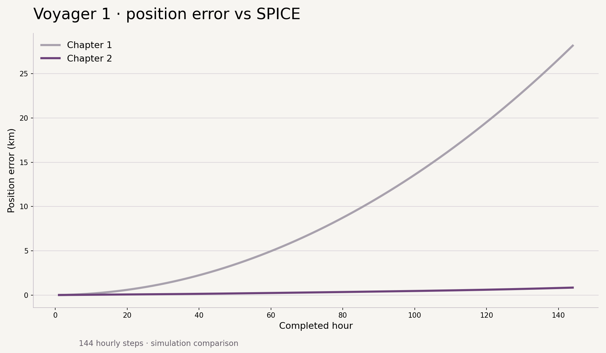
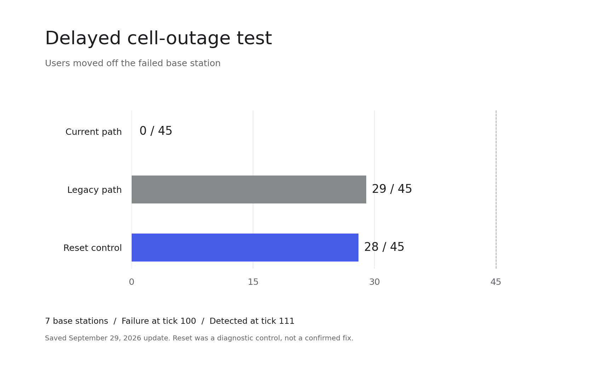
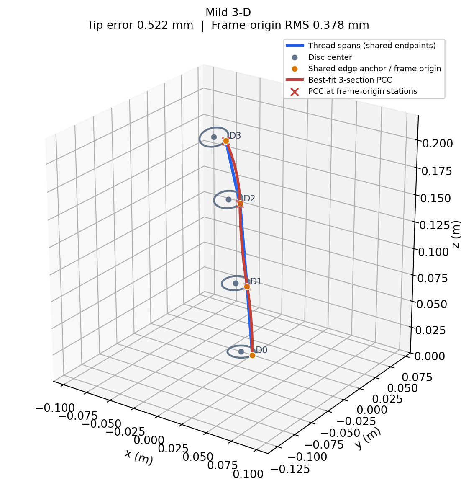
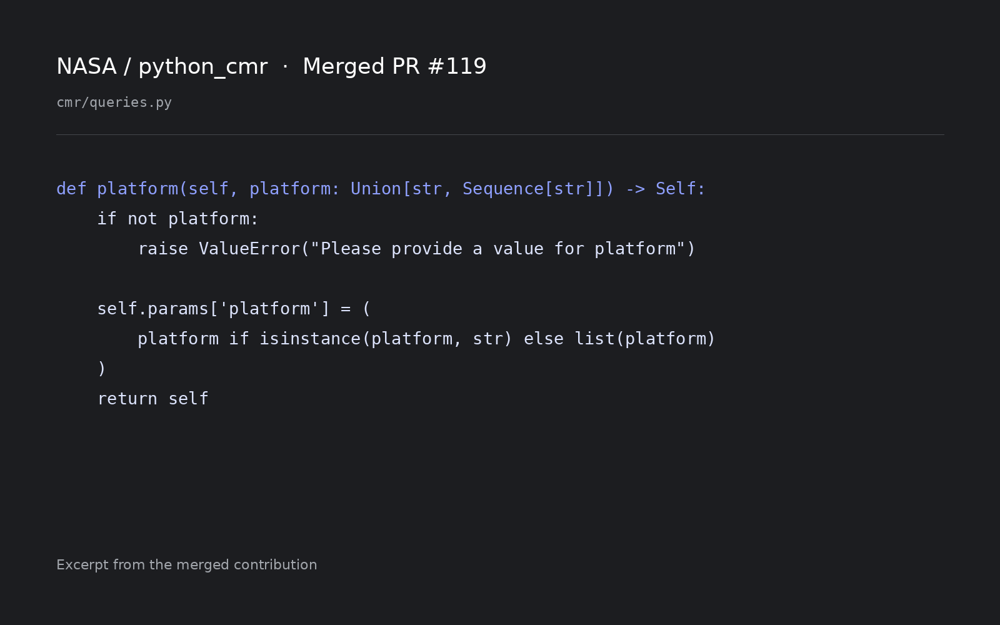
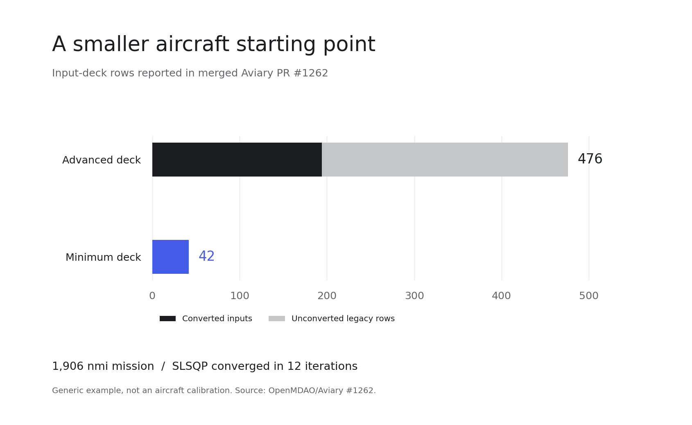
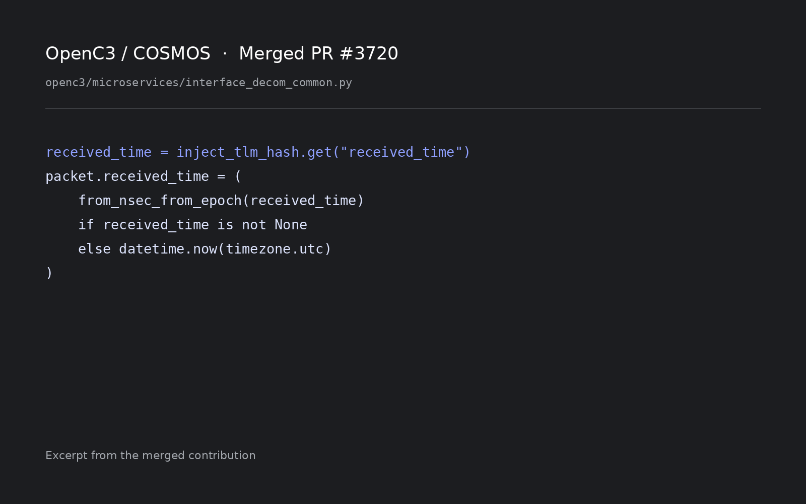

Research &
engineering.
10 projects

UC Santa Cruz
CaliforniaAI research
2026
San Diego State
CaliforniaNavigation research
2026
Cal Poly Pomona
CaliforniaRobotics
2026
Seagulls
RemoteProduct engineering & QA
2026
Voyager / Elodin
RemoteSpacecraft simulation
2026
Network recovery
CaliforniaNetwork research
2026
University of Tulsa
Oklahoma / remoteRobot modeling
2026
NASA / python_cmr
RemoteEarth-data tooling
2026
OpenMDAO / Aviary
RemoteAircraft modeling
2026
OpenC3 / COSMOS
RemoteTelemetry tooling
2026